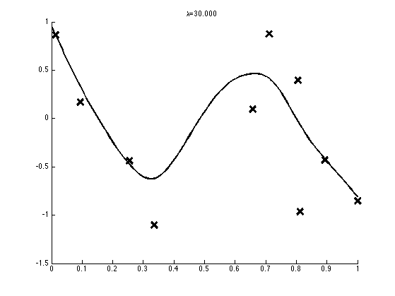
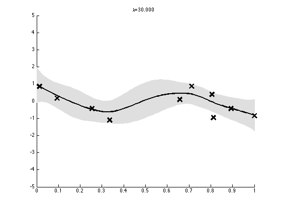
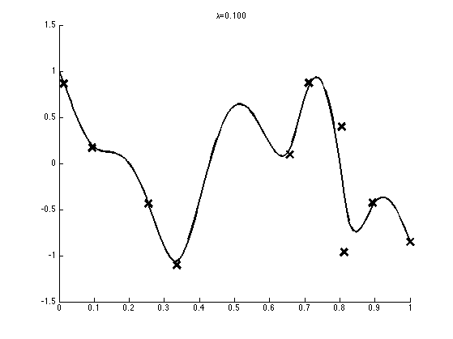

Contents
Interpolate some data using a joint Gaussian
Based on p140 of "Introduction to Bayesian scientific computation" by Calvetti and Somersalo
clear all setSeed(1); D = 150; Nobs = 10; xs = linspace(0, 1, D); perm = randperm(D); obsNdx = perm(1:Nobs); hidNdx = setdiff(1:D, obsNdx); % Noisy observations of the x values at obsNdx obsNoiseVar = 1; y = sqrt(obsNoiseVar)*randn(Nobs, 1); A = zeros(Nobs, D); for i=1:Nobs A(i, obsNdx(i)) = 1; end % Model is: p(y|x) = N(Ax, noiseLevel * I) % p(x) = N(0, inv(lambda * L'L)) % Make a (D-2) * D tridiagonal matrix L = spdiags(ones(D-2,1) * [-1 2 -1], [0 1 2], D-2, D); % lamba is the prior precision and should be related to % the obs noise; it affects the posterior mean lambdas = [30, 0.1]; %names = { '1', '0p1'}; for trial=1:numel(lambdas)
names{trial} = sprintf('%4.3f', lambdas(trial));
lambda = lambdas(trial);
L = L*lambda;
Numerically unstable method
% precMat = L'*L + 1e-3; priorDist.mu = zeros(D, 1); priorDist.Sigma = inv(precMat); obsDist.Sigma = obsNoiseVar*eye(Nobs, Nobs); %postDist = gaussSoftCondition(priorDist, obsDist, A, y); obsPrec = inv(obsDist.Sigma); postDist.Sigma = inv(precMat + A'*obsPrec*A); postDist.mu = postDist.Sigma*A'*obsPrec*y; %{ % Their book - in this method, the prior precision % has no effect on the posterior mean, which is very odd C = obsNoiseVar * eye(Nobs); L1 = L(:, hidNdx); L2 = L(:, obsNdx); B11 = L1'*L1; B12 = L1'*L2; B21 = B12'; Lambda = zeros(D, D); % posterior precision Lambda(hidNdx, hidNdx) = B11; Lambda(hidNdx, obsNdx) = B12; Lambda(obsNdx, hidNdx) = B21; Lambda(obsNdx, obsNdx) = B21*inv(B11)*B12 + inv(C); postDist.Sigma = inv(Lambda); xobs = zeros(D, 1); xobs(obsNdx) = y; postDist.mu = postDist.Sigma*xobs; %}
Plot
figure; hold on; mu = postDist.mu; plot(xs(obsNdx), y, 'kx', 'markersize', 14, 'linewidth', 3); plot(xs, mu, 'k-', 'linewidth', 2); title(sprintf('%s=%s', '\lambda', names{trial})); % plot marginal posterior 2sd as gray band figure; hold on; mu = postDist.mu; S2 = diag(postDist.Sigma); f = [mu+1*sqrt(S2);flipdim(mu-1*sqrt(S2),1)]; fill([xs'; flipdim(xs',1)], f, [7 7 7]/8, 'EdgeColor', [7 7 7]/8); plot(xs(obsNdx), y, 'kx', 'markersize', 14, 'linewidth', 3); plot(xs, mu, 'k-', 'linewidth', 2); title(sprintf('%s=%s', '\lambda', names{trial})); set(gca, 'ylim',[-5 5]); printPmtkFigure(sprintf('gaussInterpNoisyDemo%s', names{trial}))  

end % next trial